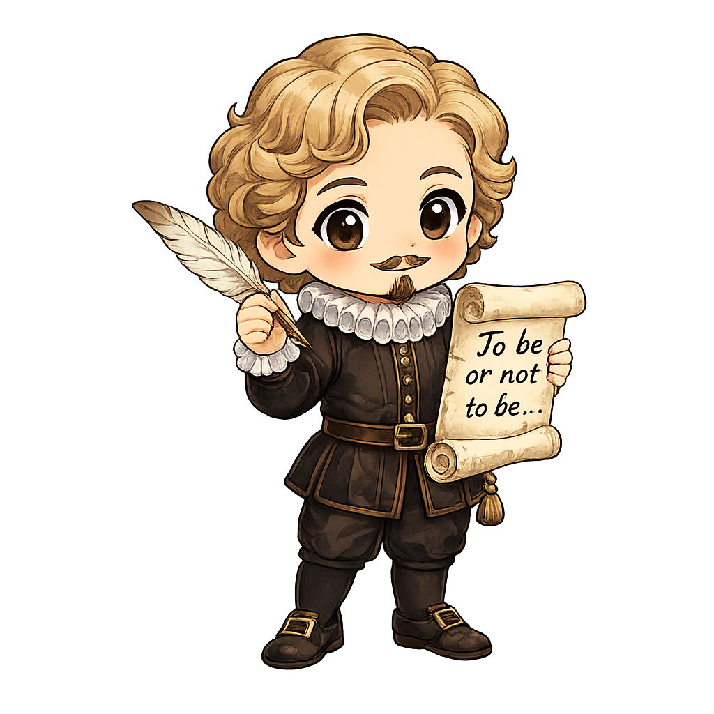
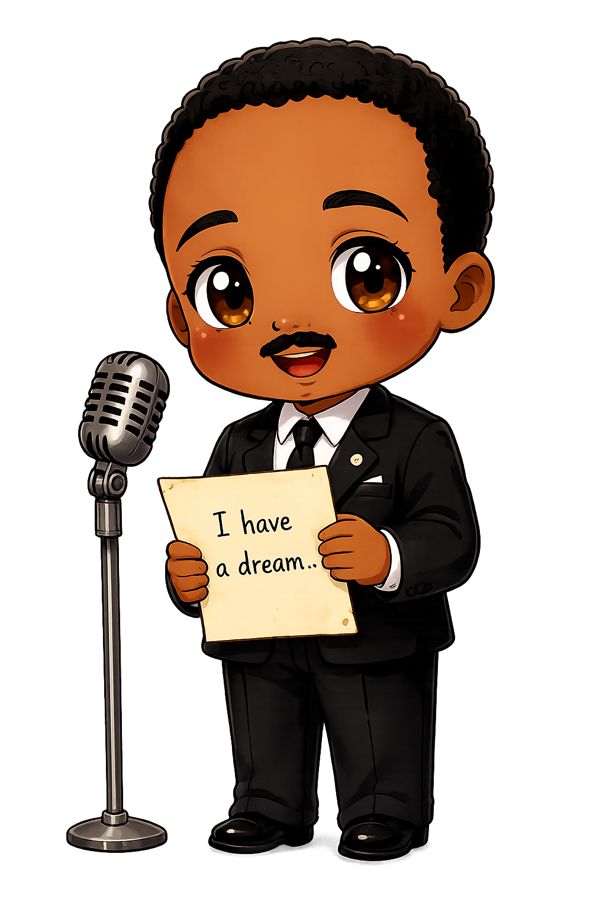
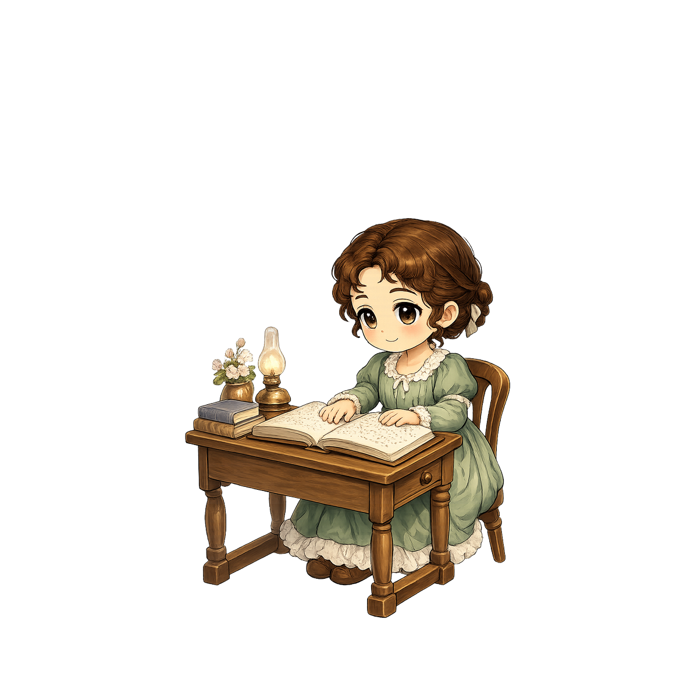
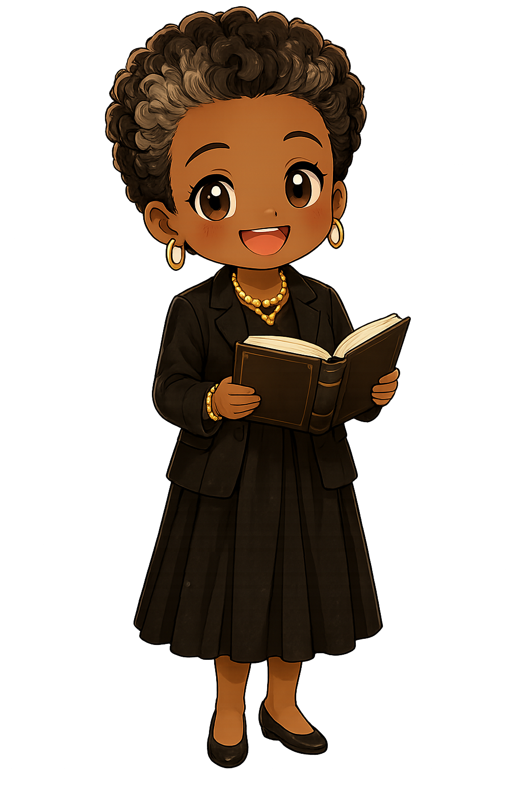
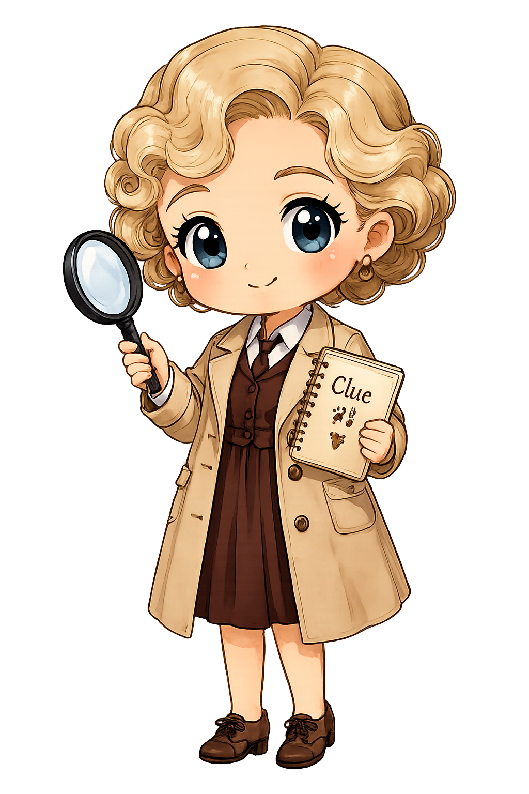
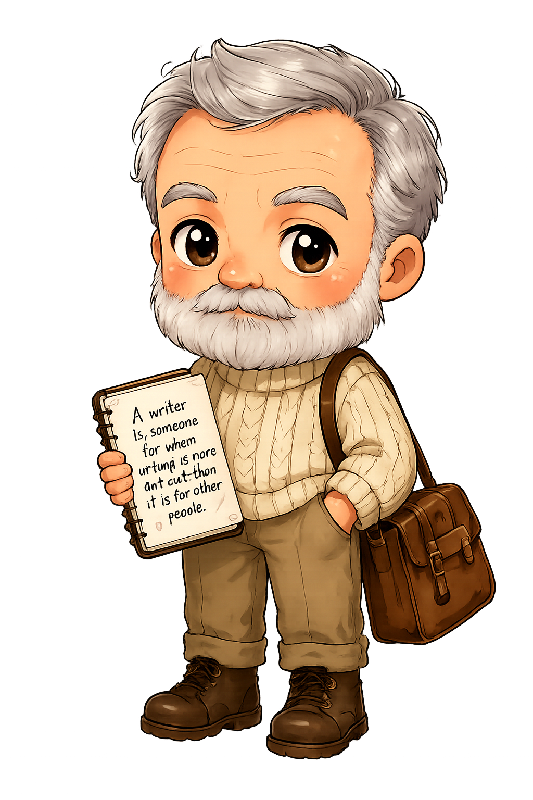

<section id="start-screen" class="screen active">
  <div class="start-cover">

    

    

    

    

    

    

    

    

    <div class="cover-center">
      <p class="cover-label">ENGLISH CHARACTER TEST</p>

      <h1>
        Which English<br>
        Character Are You?
      </h1>

      <p class="cover-description">
        Discover the English writer or inspiring figure
        who matches your personality.
      </p>

      <button id="start-btn" class="primary cover-start">
        START
      </button>

      <p class="cover-korean">
        나와 닮은 영어 인물을 찾아보세요
      </p>
    </div>

  </div>
</section>
